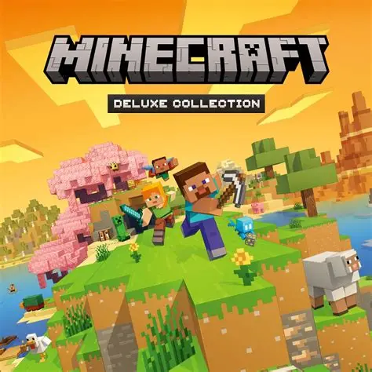

Mam na imię Paweł Naturski i jestem uczniem Technikum nr 9 w Krakowie. Interesuję się grami komputerowymi, zwłaszcza Minecraftem, który jest moją pasją życiową. Lubię spędzać czas grając z przyjaciółmi i eksplorując wirtualne światy. Poza grami, interesuję się również sportem i lubię aktywnie spędzać czas na świeżym powietrzu.
.
Chodzę do Technikum nr 9 w Krakowie.
Lubię grać w Minecraft i uprawiać sport.